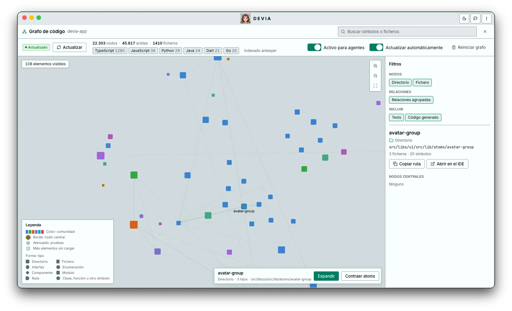

Agenti di codice in una sola finestra
App desktop per guidare Claude Code, Codex, Gemini e altri.

-
Agenti ed esecuzione
Lavora con Claude Code, Codex, Gemini CLI, OpenCode, Cursor Agent, Copilot, Grok, Pi, Kimi, Hermes, Qwen, Qoder e DeepSeek, oppure aggiungi il tuo se parla ACP. Cambia agente a metà sessione e scegli tra plan, apply e apply-yolo.

-
Contesto e memoria
Memoria persistente tra le sessioni, cronologia per progetto, e contesto, costo e token sempre visibili. Un grafo del codice proprio dà all'agente la struttura del progetto, e code mode esegue script di sola lettura sui tuoi server MCP.

-
Metodo e pianificazione
Un kanban per progetto che l'agente stesso legge e aggiorna, con spec, task e dipendenze. Devia Method guida il lavoro, e le schede interattive ti fanno domande, chiedono di approvare piani o rivedere modifiche, con qualsiasi agente.

-
Git e revisione
Stato del repository, diff inline e cambio di branch. Commenta le righe del diff e le invii all'agente come revisione. Fino a quattro agenti in parallelo, ciascuno isolato nel proprio git worktree.
worktree 1worktree 2worktree 3worktree 4
-
Remoto e piattaforma
Guida i tuoi agenti da Telegram, con invio di file, finché Devia è aperto. Terminale integrato, Docker Compose e apertura nel tuo IDE, su Windows, macOS e Linux.

Tutto sulla tua macchina
- Le tue sessioni, la memoria, il kanban e la configurazione risiedono sul tuo disco (
~/.devia-app/). - Nessun account né cloud di Devia.
- L'unica cosa che esce dalla tua macchina è ciò che la CLI di ciascun agente invia al proprio provider.
Scarica Devia Desktop
Gratuito e open source (Apache-2.0), con tutte le funzioni.